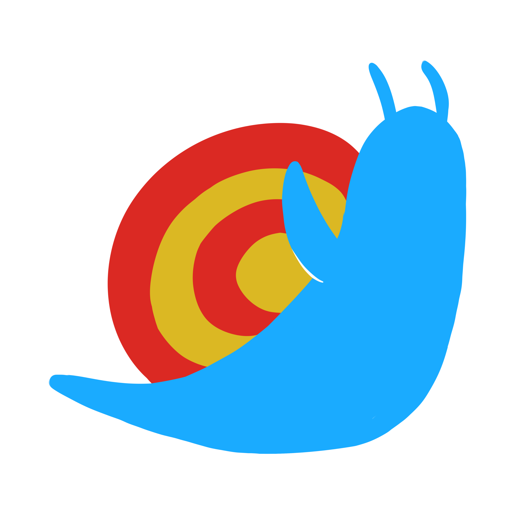

HISTORIA DEL MUSEO
Historia del museo
Cómo nació y creció el proyecto del Museo Interactivo Héctor Abad Gómez.

NIQUI DICE:
¡Esta es mi propia historia! Aquí descubrirás cómo nació el museo y cómo llegué a ser tu guía.
¿POR QUÉ ESTE MUSEO?
Un proyecto de memoria colectiva
El Museo Interactivo Héctor Abad Gómez nació en 2019 como una iniciativa de docentes y estudiantes que querían preservar la historia de la institución antes de que se perdiera en el tiempo.
Hoy es una plataforma digital viva, alimentada por la comunidad educativa, que conecta pasado y presente a través de fotografías, documentos, testimonios y experiencias interactivas.
Cómo creció el proyecto
2019
La idea nace
Un grupo de docentes y estudiantes propone crear un espacio digital para preservar la memoria institucional.
2021
Primeras colecciones
Se digitalizan los primeros archivos fotográficos y documentos históricos de la institución.
2022
Nace el podcast
Se lanza la primera temporada de podcasts con testimonios de egresados y docentes históricos.
2023
Niqui llega
Niqui se convierte en la mascota y guía oficial del museo digital, representando el barrio Niquitao.